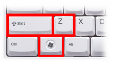
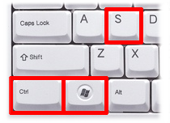
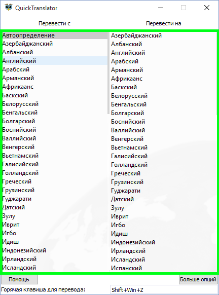
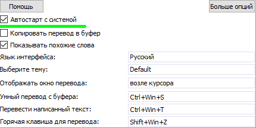
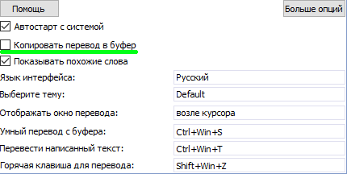
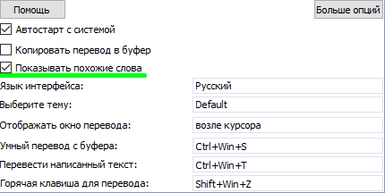
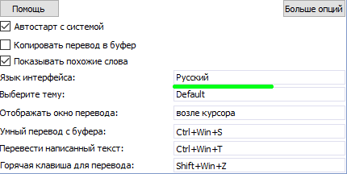
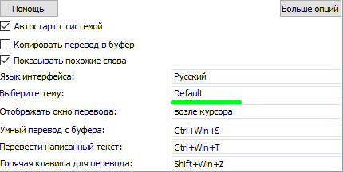
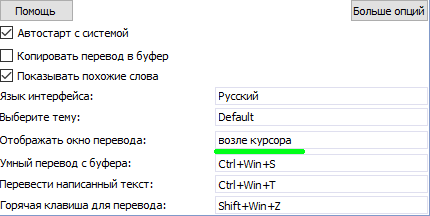
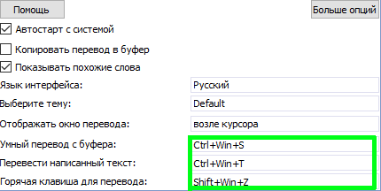

Основные сведения
QuickTranslator – свободное приложение для быстрого и легкого перевода текста с иностранного языка на тот, который Вам нужен. Ее основными возможностями являются:
Программа подходит для очень быстрого перевода практически любого текста, переводить его можно не только с браузера, но и со всех мест где его можно просто выделить. Очень полезной она будет для студентов или людей которые нуждаются в переводе большого числа форматированного текста или текста таблиц, т.к. функция «умного перевода» позволяет переводить все это единственным нажатием клавишного сокращения, без необходимости перевода ячеек таблицы по отдельности.
 Возможности
Возможности
Быстрый перевод выделенного текста

Особенностью приложения является очень удобный способ перевода, при котором даже не нужно копировать нужный текст, его нужно всего лишь выделить и нажать комбинацию клавиш (по умолчанию Shift+Win+Z), после чего Вы получите ответ выделенного текста в виде небольшого окошка с переводом.
По умолчанию при переводе выделенного или введенного текста, если Вы переводите одно-два слова, для них отображается несколько возможных вариантов перевода, что иногда может хорошо помочь в понимании того или иного слова.
Перевод написанного вручную текста

Также удобной является функция перевода вводимого вами текста, например для ручного перевода с картинки. Для вызова окошка ввода текста существует своя комбинация клавиш (по умолчанию Ctrl+Win+T), по нажатию которой на экране появляется небольшое окошко, после написания в нем необходимого текста программа отобразит его перевод.

Наверное, самой полезной функцией является функция «Умного перевода», которая по умолчанию вызывается комбинацией клавиш Ctrl+Win+S, она позволяет переводить не просто обычный, но также и форматированный текст, в котором сохраняются все Ваши настройки, такие как шрифт текста, размер, цвет, курсив, жирный, подчеркнутый и т.д., что бывает очень удобно и позволяет сильно ускорить свою работу, но также он позволяет переводить и целые таблицы. К примеру, до этого Вы переводили свыше 100 ячеек таблицы вручную, переводя их по одной, сейчас Вам нужно скопировать таблицу и нажать комбинацию клавиш, после чего будет переведена каждая ячейка таблицы, результат перевода будет сохранен в буфер и его можно будет просто «Вставить».
 Настройки
Настройки
При запуске приложения отображается окно с настройками, для отображения всех настроек нужно нажать кнопку «Больше опций». Приложение имеет следующие настройки:

Основная опция позволяющая выбрать язык, с которого нужно переводить текст и язык, на который нужно переводить этот текст. Программа позволяет переводить текст с 80-ти языков мира. Для выбора нужного языка нужно дважды кликнуть по нему.
(По умолчанию перевод с Авто на Язык системы)

Позволяет автоматически запускать приложение при запуске операционной системы. Эта опция позволяет избавиться от постоянного самостоятельного запуска приложения и позволяет приложению всегда быть готовым к переводу.
(По умолчанию включена)

При включении копирует переведенный текст в буфер обмена, это позволяет не копировать его вручную с окна перевода и увеличивает скорость работы при переводе большого количества текста.
(По умолчанию отключена)

Осуществляет отображение похожих слов для одного-двух слов, которые переводятся, некоторые слова имеют несколько значений, поэтому эта возможность будет полезной при необходимости определить значение слова в конкретном случае.
(По умолчанию включена)

Как понятно из названия позволяет сменить язык интерфейса, по умолчанию выбирается язык системы, но если программа не переведена на ваш язык Вы можете выбрать другой язык, который также понимаете.
(По умолчанию язык системы иначе английский)
Выбор темы оформления программы

Позволяет выбрать желаемую тему оформления программы из предложенного списка, в наличии светлая и темная темы, а также легкая тема, которая установлена по умолчанию. В дальнейшем их количество будет увеличено.
(По умолчанию легкая тема)

Данная опция позволяет выбрать способ отображения перевода, в данный момент программа позволяет выводить перевод следующими способами:
(По умолчанию отображается в нижнем правом углу)

Отдельными настройками являются настройки горячих клавиш перевода для каждого из режимов. Сейчас существую три режима перевода:
Для изменения комбинации клавиш нужно кликнуть по ее отображении в программе и ввести свою комбинацию. При отображении комбинации красным цветом ее нужно сменить, это происходить когда данная комбинация уже занята другой программой или системой.
(По умолчанию перевод выделенного текста: Shift+Win+Z)
(По умолчанию перевод введенного текста: Ctrl+Win+T)
(По умолчанию «Умный перевод»: Ctrl+Win+S)
Спасибо за использование этого приложения! Надеюсь оно принесет Вам много положительных эмоций и позволит сократить много часов, которые Вы бы потратили на ручной перевод текста и(или) документов.
Желаю удачного использования!